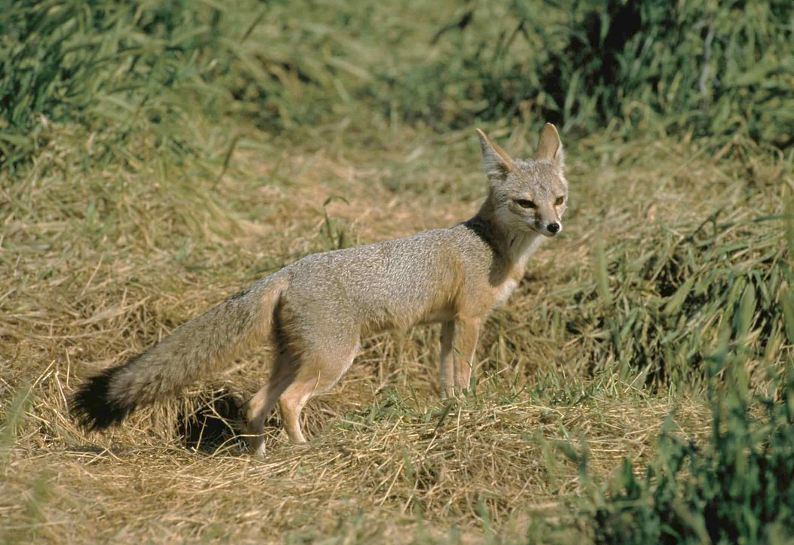
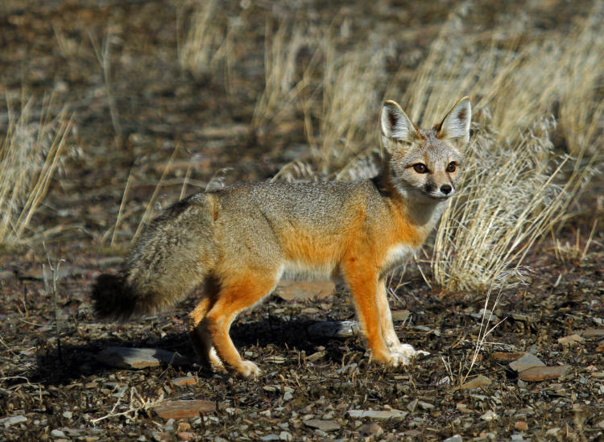
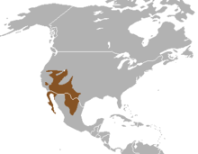
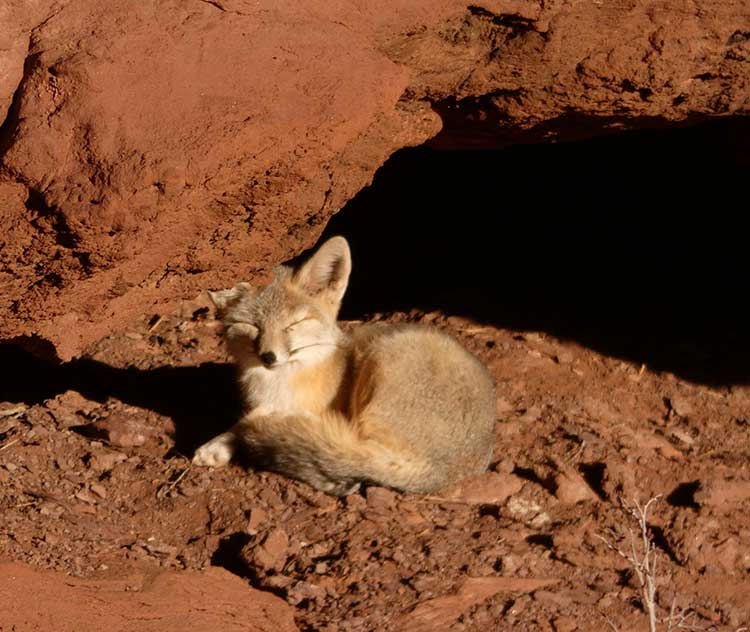
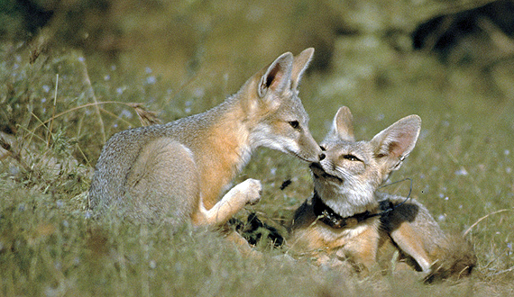

Description of the Kit Fox
Appearance
The kit fox (Vulpes macrotis) is one of the smallest species of the family Canidae found in North America. It has large ears, between 71 and 95 mm (2.8 and 3.7 in), that help the fox dissipate heat and give it exceptional hearing (much like those of the fennec fox). This species exhibits little sexual dimorphism, with the male being slightly larger.
The color and texture of the coat vary geographically. In general, the dorsal color is grizzled or yellowish-gray. The grizzled appearance is the result of guard hairs that are typically black-tipped or with two black bands separated by a white band. The guard hairs are less than 50 mm long, and particularly prominent in the middle of the back. The soles of the legs are protected by stiff tufts of hair, a trait that improves traction on loose sandy surfaces as well as protection against extreme temperatures; muzzles and vibrisae are generally black to brown. The tail is bushy and gray, with a black tip, and the caudal gland has a pronounced black spot. Unlike the gray fox, it has no stripe along the length of its tail. Its color ranges from yellow to gray, and the back is usually darker than the majority of its coat; its belly and inner ears are usually lighter. It has distinct dark patches around the nose. The ears are tan or gray on the back, turning to buff or orange at the base. The shoulders, the lower sides, the flanks, and the strip about 25 mm wide across the chest range in color from buffy to orange.
Habitat
The northernmost part of its range is the arid interior of Oregon. Its eastern limit is southwestern Colorado. It can be found south through Nevada, Utah, southeastern California, Arizona, New Mexico, and into western Texas.
Kit foxes inhabit arid and semi-arid regions encompassing desert scrub, chaparral, halophytic regions, and grasslands. Generally, areas with sparse ground cover are favored. Vegetation habitats vary with the regional fauna, but some examples are sagebrush Artemisia tridentata and saltbrush Atriplex polycarpa. Loose textured soils may be prioritized for denning. Kit Foxes can also be found in agricultural areas, in particular orchards, on a small basis, and can even inhabit urban areas. They are found at elevations of 400 to 1,900 meters (1,300 to 6,200 ft) above sea level.
Behaviour
Kit foxes are mostly nocturnal and sometimes crepuscular; they escape heat stress during the day by resting in underground dens. Kit foxes normally forage on their own. Kit foxes are not exceptionally territorial, preferring to live in pairs or small groups of relatives.
Dens are used during the year for daytime resting, escaping predators, avoiding extreme heat, preserving moisture, and carrying and rearing young. Kit Foxes will dig their own dens, but they can also modify and use the burrows of badgers, ground squirrels, prairie dogs, and kangaroo rats. Dens are spread across the home range, and an individual fox usually uses more than 11 dens in a given year. They normally rest in their dens during the day, but sometimes can emerge to bask and, when pups are young, to play.